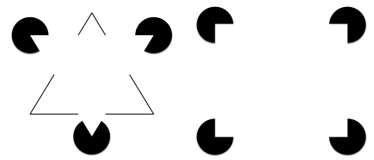
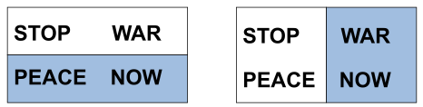
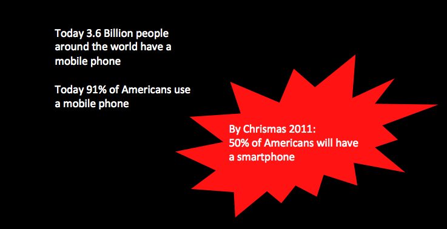
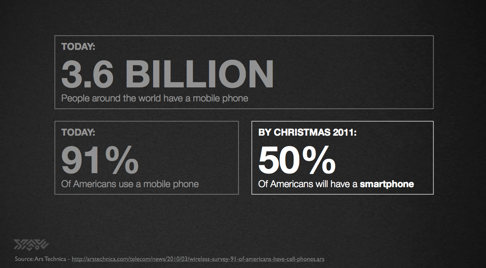
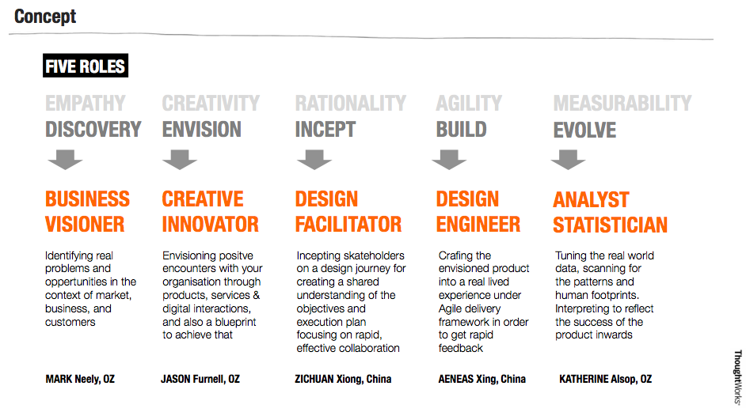
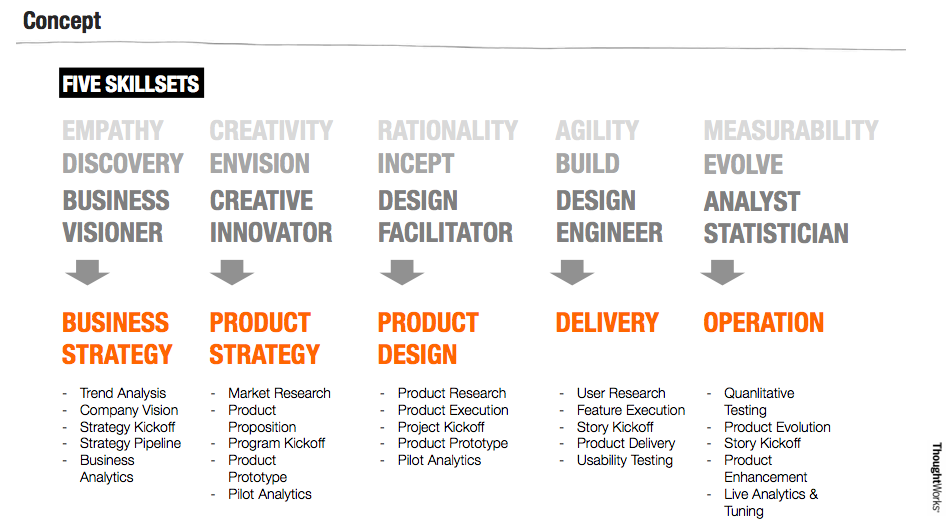
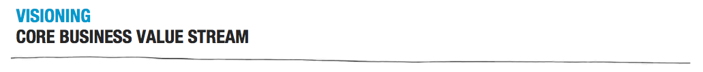
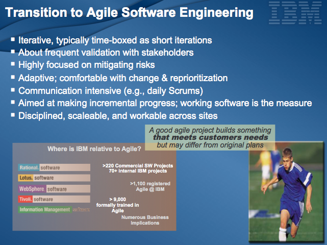

人的大脑总是在寻找捷捷径（Shortcut），视觉引导就是在使用图形化的方式创造设计者希望观察者去理解的捷径。

例如上面这个图，左侧的三角形和右侧的矩形都是通过信息引导元素（分布在周围带缺口的黑色圆点）产生。
接下来这个例子体现了颜色是如何引导观察者对信息产生不同认知的。

那么在PPT的信息设计中应该如何体现这种信息引导呢？看下面这个例子：

这是一种最简单的信息引导工具──高亮，使用高对比的图形和颜色表达PPT中最重要的东西。同样的信息，看下面这个例子：

在第二个例子中，设计者将非高亮和高亮部分的信息进行分组──时间、数字、注释的信息均遵守统一的视觉表达，使得观察者不但明白高亮部分应该被关注，同时理解非高亮部分信息的比对作用。因此，使用高亮适合应该注意的一点是：
使用高亮时应该保持非高亮内容与高亮内容统一的视觉表达，以帮助观察者对两部分信息进行对比
另外一种信息引导工具是信息流，就像网站应用中的面包屑，时刻让观察者了解我在哪里？我从哪来？看下面这个例子：


在上面这个例子中使用不同灰度的文字、箭头、以及高亮来表达两页之间的关系，形成一条信息流，使得观察者理解整个信息的逻辑关系，而不产生迷失的感觉，注意这里同样保证每组信息中不同元素统一的视觉表达。
其实最简单信息引导就是好的页头，就像下面这个例子：

章节名称放在上面，使用灰度字号稍小，当前页标题放在下面，使用主色调，并采用较大字号。这样也能够让听众不会产生迷失感。
过度使用视觉引导的结果如下图所示：

这个例子中作者使用了列表，引用框，粗体，独立小widget，还有一张带着凸起效果的图片作为信息引导工具，最终的结果是，观察者不知道要看什么，对于讲演者来讲，使用这样的PPT需要非常强的讲演引导能力，但是如果真有这个能力，PPT其实也根本没有这么重要了。
写在最后
关于信息引导在PPT设计中的几点总结如下：
- 使用高亮时兼顾非高亮的内容，保持各个元素在视觉表达上的一致；
- 在页面上建立合理的信息流；
- 组织良好和用词准确的页面标题是让听众不产生迷失感的第一步;
- 过度使用视觉引导给讲演者的演讲技能要求增加负担；
下一期我们将探讨如何使用SmartArt。